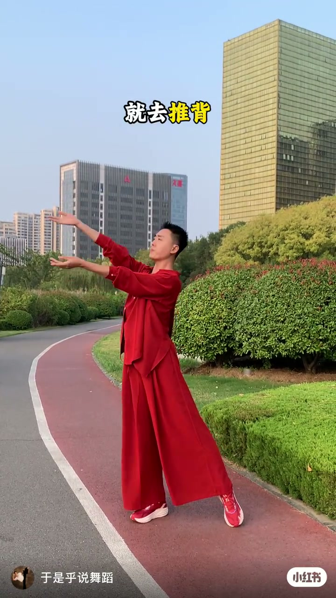
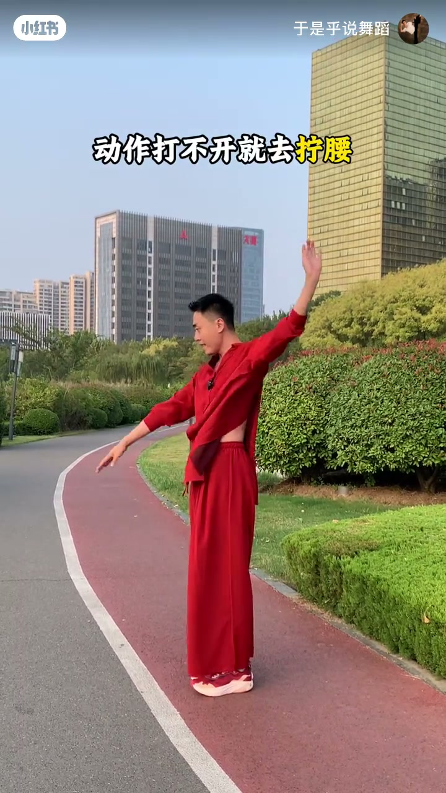
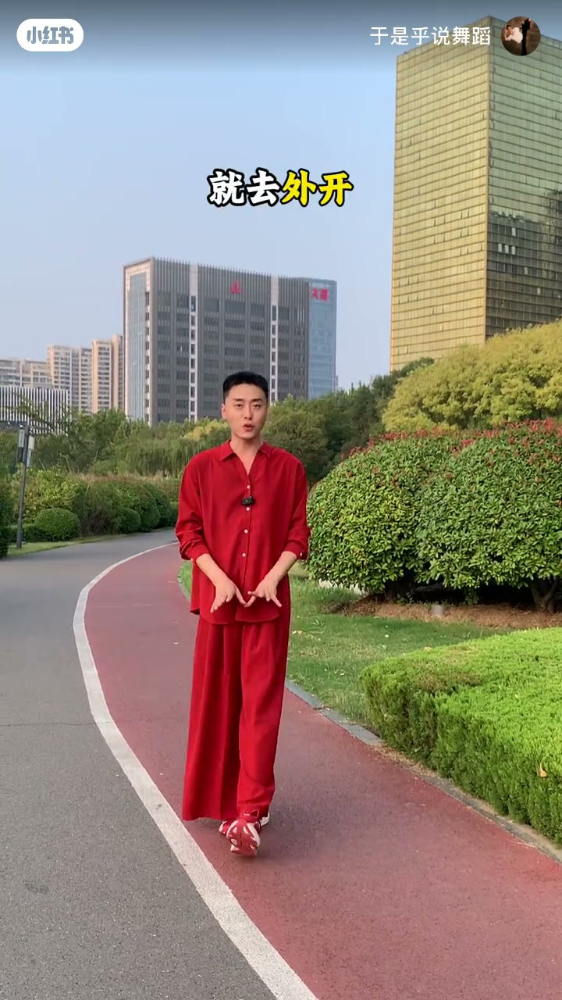

内容要点
知识结构
[00:00→00:07]
没劲→推背
手臂前伸、掌心向上，用背部把力「推」出去，而不是只甩胳膊。
[00:07→00:15]
打不开→拧腰
一侧手臂上扬、躯干拧转，用腰胯打开动作幅度。
[00:15→00:22]
站不稳→外开
字幕提示「就去外开」：髋关节外旋、站位更稳，支撑后续动作。
总结
舞感不是「动作越大越好」，而是背部发力、腰拧开、髋外开三件小事叠在一起。
Whisper 非空分段仅1条；推背/拧腰/外开三句以片内字幕为准。
图文实录
开场：跳舞没劲就去推背
00:00 – 00:07
穿红衣的老师站在城市公园跑道上，双臂前伸、掌心向上，字幕写「就去推背」。口播残段对应：没劲时先找背阔肌发力，而不是只靠手臂甩动。

[00:04]字幕「就去推背」：用背部把力推出去
On-screen text “push with the back”: send force from the back, not just the arms
动作打不开就去拧腰
00:07 – 00:15
下一帧字幕换成「动作打不开就去拧腰」：一手高举、一手前探，腰部拧转把动作「拧开」，幅度来自躯干而非硬拉胳膊。

[00:11]字幕强调拧腰：用腰胯打开动作幅度
On-screen text stresses waist twist: open range through the hips and waist
站位：就去外开
00:15 – 00:22
收束字幕「就去外开」：面向镜头讲解髋部外开/turnout 意识，让支撑腿更稳，是零基础舞感的第三块拼图。

[00:18]字幕「就去外开」：髋部外旋稳住站位
On-screen text “turnout”: external hip rotation to stabilize stance